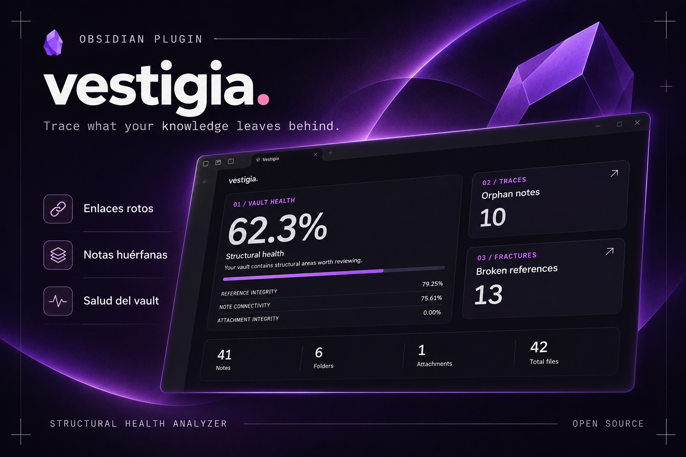
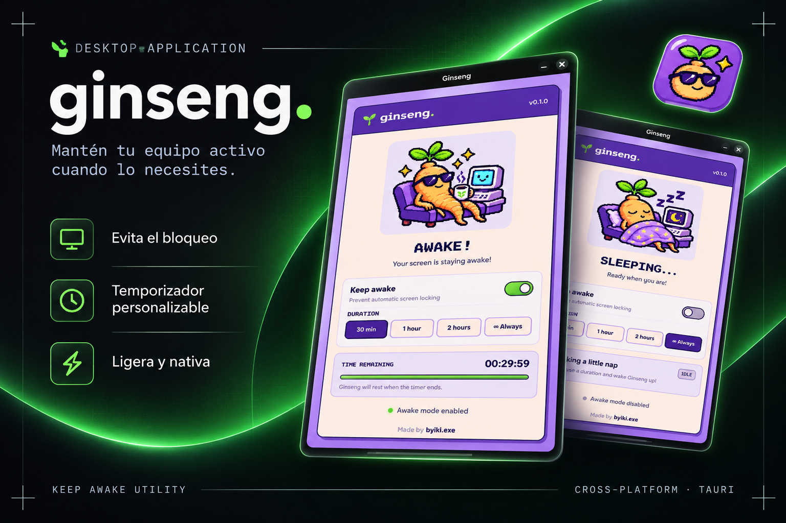
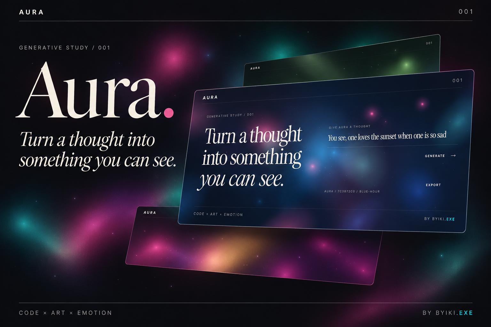

Obsidian Plugin
Vestigia
Analiza la salud estructural de tu vault de Obsidian. Detecta enlaces rotos, notas huérfanas y problemas de organización.
[ Independent Software Studio ]
Desarrollo de software, herramientas open source y productos digitales. Soluciones útiles, mantenibles y diseñadas con propósito.
Herramientas independientes que nacen de problemas reales, la curiosidad y las ganas de construir algo útil.

Analiza la salud estructural de tu vault de Obsidian. Detecta enlaces rotos, notas huérfanas y problemas de organización.

Una utilidad de escritorio ligera para evitar el bloqueo automático por inactividad y mantener tu equipo activo cuando lo necesites.
Un espacio de experimentación en la intersección entre código, diseño y creatividad.

Un experimento de arte generativo que transforma palabras en composiciones visuales deterministas. Una exploración de la relación entre lenguaje, algoritmos y expresión visual.
Soluciones técnicas diseñadas para funcionar, evolucionar y mantenerse en el tiempo.
Desarrollo de aplicaciones web, herramientas de escritorio y productos digitales. Software funcional, mantenible y orientado a necesidades reales.
Desarrollo de servicios backend, APIs, gestión de bases de datos e integración entre sistemas y aplicaciones.
Gestión de infraestructura Linux, contenedores, entornos de ejecución, despliegues y migraciones de aplicaciones.
Automatización de procesos, scripting y desarrollo de herramientas internas para reducir tareas repetitivas y mejorar los flujos de trabajo.
Design × Engineering × Curiosity
byiki.exe es un estudio independiente de desarrollo de software y experimentación digital.
Un espacio donde la ingeniería de software, la infraestructura y el diseño se encuentran para dar forma a herramientas, productos e ideas.
Construir, aprender, cuestionar y mejorar. Entender la tecnología no solo como una herramienta, sino como un medio de creación.
Detrás de byiki.exe hay una desarrolladora con una visión multidisciplinar de la tecnología y una curiosidad constante por descubrir nuevas formas de construir.
Libertad para explorar, experimentar y construir ideas propias.
Tecnología con una razón de ser. Funcionalidad antes que complejidad.
Aprendizaje constante, iteración y mejora continua.
Para proyectos, colaboraciones o cualquier idea que quieras explorar.